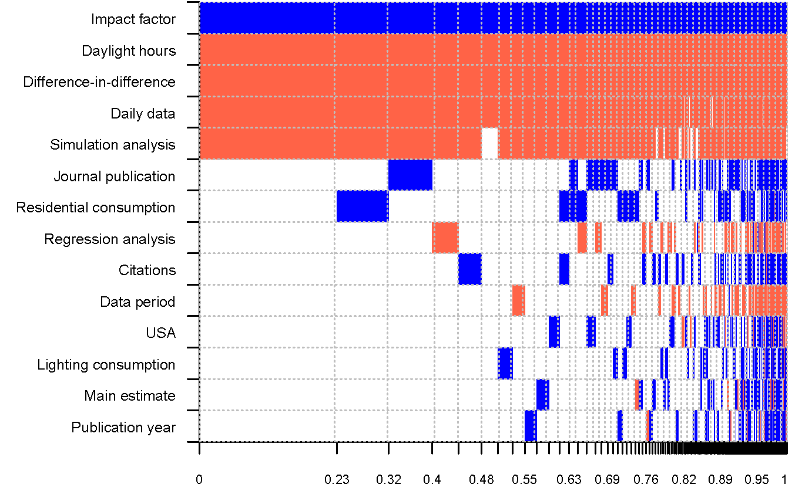

Abstract
The original rationale for adopting daylight saving time (DST) was energy savings. Modern research studies, however, question the magnitude and even direction of the effect of DST on electricity consumption. Representing the first meta-analysis in this literature, we collect 162 estimates from 44 studies and find that the mean reported estimate indicates slight electricity savings: 0.34% during the days when DST applies. The literature is not affected by publication bias, but the results vary systematically depending on the exact data and methodology applied. Using Bayesian model averaging we identify the most important factors driving the heterogeneity of the reported effects: data frequency, estimation technique (simulation vs. regression), and, importantly, the latitude of the country considered. Electricity savings are larger for countries farther away from the equator, while subtropical regions consume more energy because of DST.
Fig: Determinants of the reported DST effects (blue color denotes a negative effect on savings)
Reference: Tomas Havranek, Dominik Herman, and Zuzana Irsova (2018), "Does Daylight Saving Save Electricity? A Meta-Analysis." Energy Journal 39(2), 35-61.